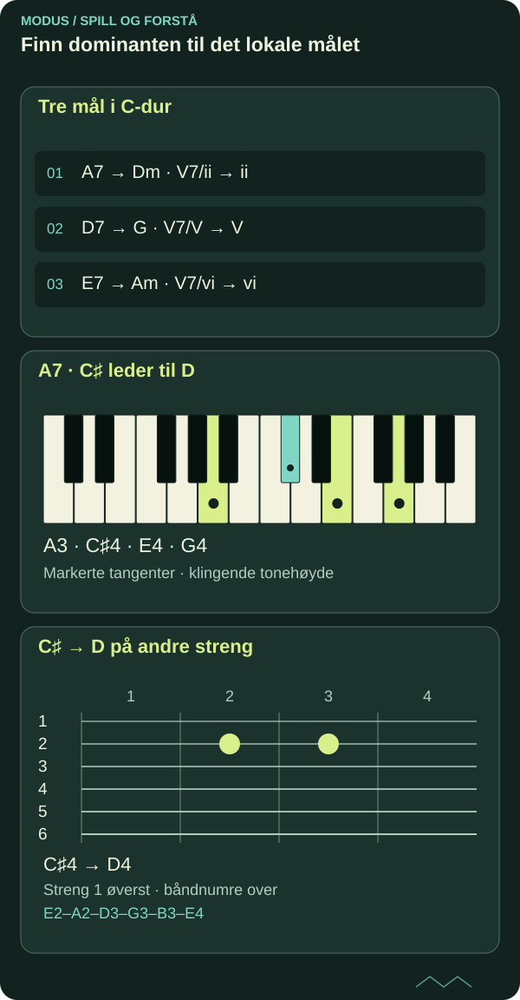

Sekundærdominanter: gi en akkord sin egen opptakt
En akkord utenfor tonearten kan ha en helt tydelig retning. Sekundærdominanter gir midlertidig vekt til en annen akkord og åpner for mer bevegelige harmoniseringer.
DETTE LÆRER DU
Sekundærdominanter: gi en akkord sin egen opptakt
- Finne målakkord og stave dens dominant.
- Skille tonikalisering fra etablert modulering.
- Bruke kromatiske ledetoner i en egen harmonisering.

Begynn med akkorden du vil fram til
I C-dur er Dm den diatoniske ii-akkorden. Vil du gi Dm en dominantopptakt, finner du dominanten til D: A eller A7. A7 inneholder A–C♯–E–G. C♯ leder til D og er den kromatiske tonen som tydeligst viser retningen.
Vi skriver V7/ii, lest dominantseptim til andre trinn. Skråstreken i romertallet angir funksjonens mål. Den skal ikke forveksles med skråstrek i et akkordsymbol som A7/C♯, der tonen etter streken angir bass. V7/ii kan selv forekomme i flere omvendinger.

Les diagrammet som tekst
- Tre mål i C-dur: A7 → Dm · V7/ii → ii; D7 → G · V7/V → V; E7 → Am · V7/vi → vi
- A7 · C♯ leder til D: A3 → C♯4 → E4 → G4
- C♯ → D på andre streng: streng 2, bånd 2: C♯4; streng 2, bånd 3: D4
Tre mål i samme toneart
C–A7–Dm–G7–C kan analyseres I–V7/ii–ii–V7–I. C–D7–G–C blir I–V7/V–V–I. C–E7–Am–F–G–C bruker V7/vi. Stav hver dominant fra dens egen grunntone før du setter romertallet på.
D7 består av D–F♯–A–C. F♯ har en ledetoneretning mot G, mens C ofte går ned til B i klassisk sats. E7 inneholder G♯, som leder til A. Ikke kall enhver durakkord utenfor C-dur en sekundærdominant: undersøk målet og den faktiske fortsettelsen.
Tonikalisering eller modulering?
En kort A7–Dm-bevegelse inni en tydelig C-durfrase gir vanligvis lokal tonikalisering av ii. Hvis videre musikk etablerer D som varig sentrum, med egne fraser, kadenspunkter og harmonisk hierarki, kan en modulasjonsanalyse være bedre. Det finnes ingen universell grense ved et bestemt antall takter.
Spill C–A7–Dm–G7–C og kjenn tilbakekomsten. Sammenlign C–A7–Dm–Gm–A7–Dm, der D-moll får mer strukturell støtte. Beskriv både globalt utgangspunkt og lokalt mål. En analyse kan vise overgangen uten å late som hvert øyeblikk har én udiskutabel toneart.
Piano: en kromatisk stemme forklarer mye
Spill C-dur med E–G–C i høyre hånd. Gå til A7 med E–G–C♯, deretter Dm med F–A–D. Legg C, A og D i bassen. Følg C–C♯–D som egen stemme. Denne korte linjen gjør den kromatiske funksjonen hørbar.
Prøv en enklere tostemmereduksjon: C♯–G over A, så D–F over D. Den første samklangen viser ters og septim i A7. I den andre går ledetonen opp og septimen ned. Bytt senere register uten å endre de to oppløsningene.
Gitar: få fram tonen som gjør forskjellen
Sammenlign Am og A7 i standard stemming. Et åpent A7-grep kan spilles x02020, lest fra sjette til første streng; x betyr dempet streng. Det inneholder A–E–G–C♯–E. Et åpent Dm-grep er xx0231 og inneholder D–A–D–F.
Spill først Am–Dm, deretter A7–Dm. Finn C♯ på andre streng, bånd 2, og la den gå til D på andre streng, bånd 3 i en egen melodistemme. Du trenger ikke holde et fullt grep samtidig. Over et enkelt opptak av A7–Dm kan du improvisere med C♯ som opptakt til D i stedet for å skifte til et helt nytt fysisk skalakart.
Reharmoniser uten å miste melodien
Ta en firetakters C–Am–Dm–G7-skisse. En melodi med C i andre takt kan kollidere med C♯ i A7 hvis du erstatter Am ukritisk. Prøv å legge A7 på andre halvdel av takten etter at melodien har gått fra C til E. Da får den nye dominanten plass uten at melodien skrives om.
Skriv både original og variant med samme melodilinje. Marker endrede toner og forklar om spenningen er ønsket eller tilfeldig. Lag deretter en variant i F-dur: F–D7–Gm–C7–F. D7 er nå V7/ii. Funksjonen bevares mens tonearten og akkordnavnene endres.
Gi samme mål to ulike innganger
I G-dur kan Am komme rett etter G. Spill G–Am–D7–G. Spill så G–E7–Am–D7–G i samme tempo. E7 har E–G♯–B–D. Hold G♯ tydelig fremme og la den gå opp til A. Spill D i en annen stemme og la den gå ned til C. De to bevegelsene gjør Am til et tydelig lokalt mål. Hør deretter hvordan D7–G avslutter frasen i G-dur.
Skriv den utvidede rekken som I–V7/ii–ii–V7–I. Tell fra målakkorden dersom du vil lage en variant. I G-dur er C på IV. Dominanten til C har G som grunntone. Spill først G-durtreklangen og så G7 før C. Den tilsatte tonen F peker mot E. I konteksten G–G7–C–D7–G kan G7 leses som V7/IV.
Prøv selv. Lag en linje med én tone per akkord i hver rekke. La linjen vise den mest hørbare kromatiske endringen. Spill deretter for en annen musiker uten å vise akkordsymbolene. Be lytteren peke ut hvilket akkordskifte som fikk ekstra vekt, og hvor frasen fant hjem.
Kontroll. G–G♯–A–F♯–G fungerer over den første utvidede rekken. G–F–E–F♯–G fungerer over den andre. Syng siste G for å kjenne igjen det felles tonale sentrum. De to linjene er melodiforslag. For å høre begge oppløsningene i E7 → Am, spill G♯ → A og D → C samtidig.
Kildegrunnlag for sekundærdominanter og tonikalisering. Musikkteori v3 med redaksjonelle notater, §§2.11–2.12. Open Music Theory – Tonicization
Kildegrunnlag og faglig status
Original norsk MODUS-tekst med egne undervisningseksempler. Faglig referansegrunnlag for videre kontroll:
Under arbeid – ikke faglig sluttgodkjent. Artikkelen dokumenterer ingen personlig mestring og gir ingen formell studie- eller publiseringsgodkjenning. Skriftlig forklaring, faktisk spill og lytting må vurderes hver for seg.
FRA LESING TIL SPILLING
Prøv det selv.
Skriv to åttetakters harmoniseringer av samme egen melodi, én diatonisk og én med to sekundærdominanter. Vis målakkorder og før kromatiske ledetoner fram til målet i et gitar- eller pianoopptak.
- Gjør et selvstendig første forsøk før du ser quizfasiten.
- Spill den konkrete modellen på gitar og piano, og lytt til forskjellen.
- Lag en ny variant og behold første og bearbeidede versjon separat.
SJEKK FORSTÅELSEN
Hva sitter igjen?
Tre spørsmål om det du har lest. Alle tre riktige gir fullført quiz. Du kan prøve så mange ganger du vil.
Fullføring lagres i denne nettleseren og deles mellom norsk og engelsk.
Du har svart riktig på alle tre spørsmålene. Ta ideen med til instrumentet.
Til artikkelbiblioteket ↗︎ANBEFALT NESTE STEG
Akkordutvidelser: 9, 11 og 13 i spillbare klanger
Neste del av den foreslåtte faglige ruten. Velg emner ut fra forkunnskap og behov.
Akkordutvidelser: 9, 11 og 13 i spillbare klanger ↗︎